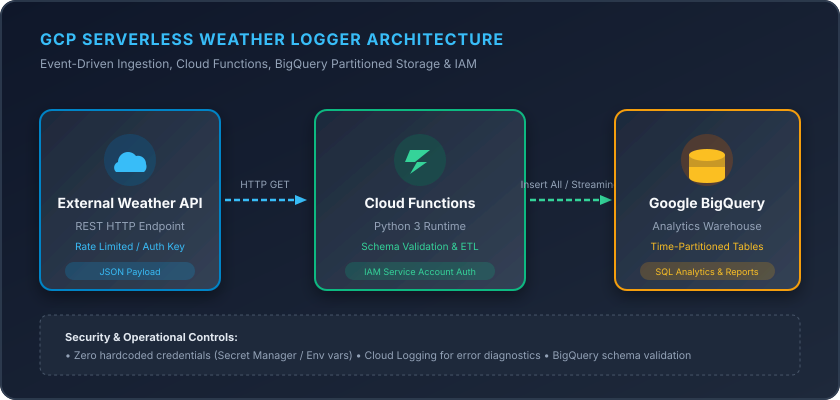

Serverless Weather Data Ingestion Pipeline
GCP & PythonArchitected and deployed an automated serverless ETL ingestion pipeline using Google Cloud Functions and Python to extract, normalize, and load external weather data into partitioned BigQuery tables.
Google Cloud Functions
BigQuery
Python 3
Cloud IAM
REST APIs